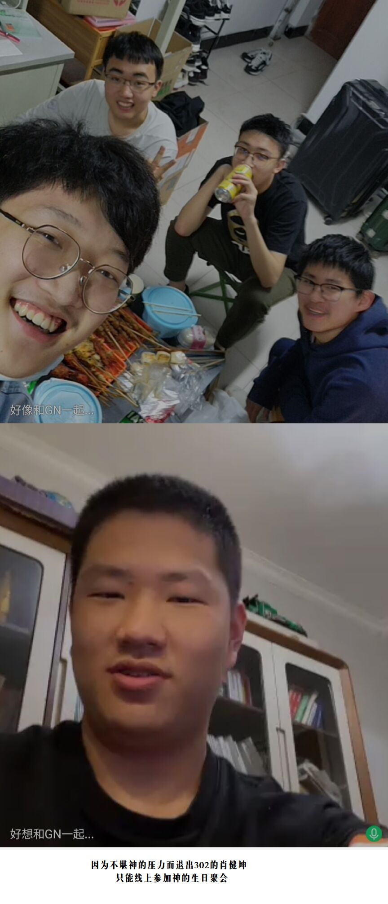
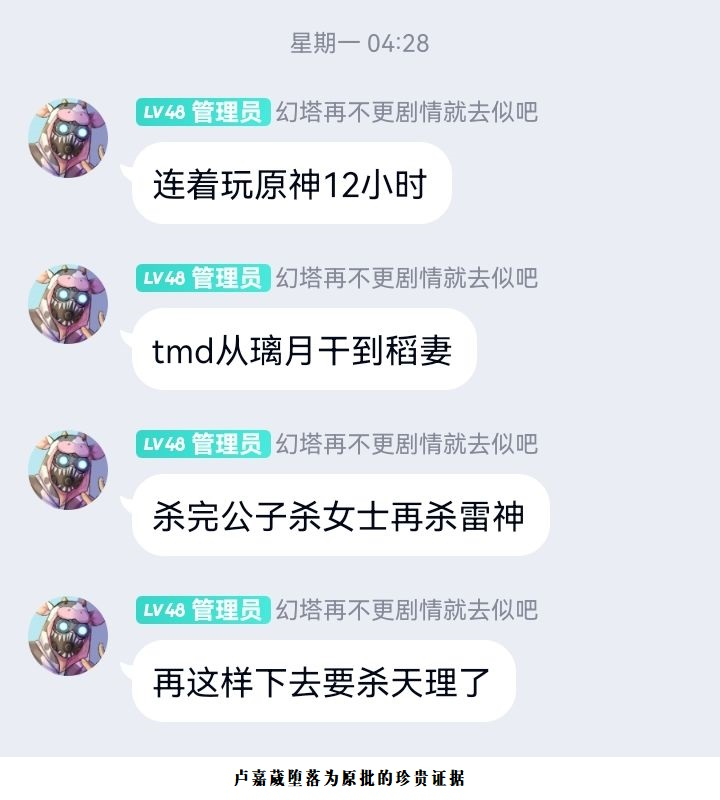
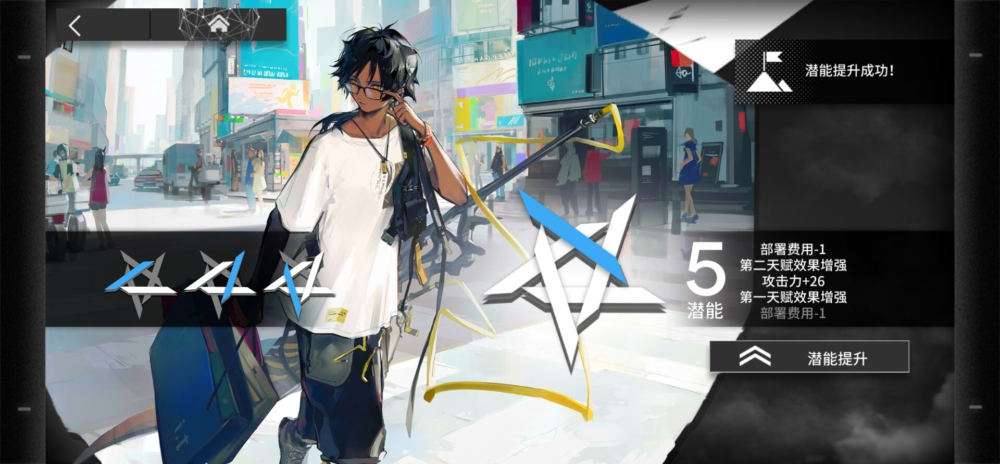

到达大工最高宿舍，26舍！
太美丽啦26舍，诶这不曲冠霖嘛，来看下远处的302吧家人们
别卷了，曲冠霖！
你这么卷，让我们怎么活啊！
曲冠霖为什么是神？
在谈论这个问题之前，我想先说说其他人或狗相较于曲冠霖究竟差在了哪里
首先是犯下傲慢之罪的肖健坤。
学会个Python就露出不屑的笑，这种傲慢的他注定走不长远，事实也是如此，靠着一个工程计算导论赢了神之后一直在走下坡路，最终泯然众人，不堪压力退出302。与之相比，神就很谦卑，普通化学的90+，WeCraft的组长都是神留给凡人的慈悲，神不是不会，只是不想通过太完美的表现让同学绝望所以故意不用，可笑有些人不理解神的良苦用心，竟然还用这些事来讥讽神，我劝你们好自为之。

然后是犯下愤怒之罪的卢嘉葳。
因为曲冠霖说幻塔的不好就跟人家打架，违背了神在《新约》中的一句话：“我觉得神就是要能很好的控制自己的情绪吧。”于是神降下了他的惩罚，幻塔关服，卢嘉葳从此成为原批，一蹶不振。

接着是犯下懒惰之罪的周聪。
自以为既是原批又是舟批就了不起了。大家有所不知，其实在明日方舟三周年抽卡时，周聪闭上眼睛许愿的时候，其脑海中看见的画面，正是站在光芒之中的曲冠霖，那时神告诉他：“你只可到这里，不可越过。”然而，神的劝说不但没有让周聪迷途知返，竟然还敢在三周年池中大抽特抽，于是神降下了他的惩罚，周聪在抽卡时抽到了他的第5个棘刺，从此成为了棘刺的忠实粉丝。

最后，犯下狗之罪的郑涵冰
点击查看郑涵冰的图片